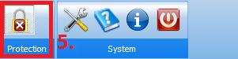

Step 2: Accessing Documents
- Go to VLNV tree, although hierarchical access is also functional.
- Browse to the desired document, double click to open, or right click for context menu.
- The external interfaces and ad-hoc ports are illustrated below.
- You need to open protection (ctrl + L) to modify the document. It is protected again with the same button or hotkey, or when protection of another document is opened.
The next step is creating documents.
The previous step was configuring a library.

